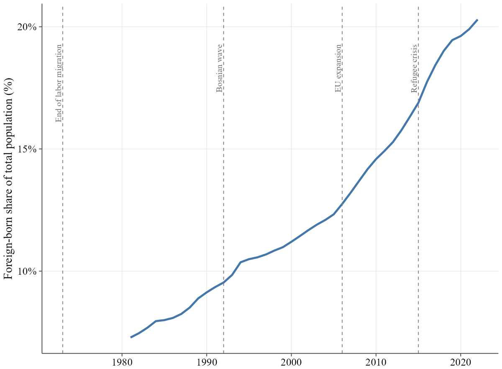
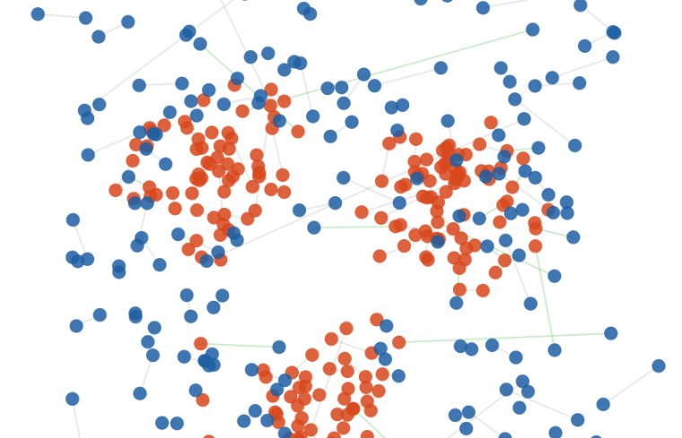
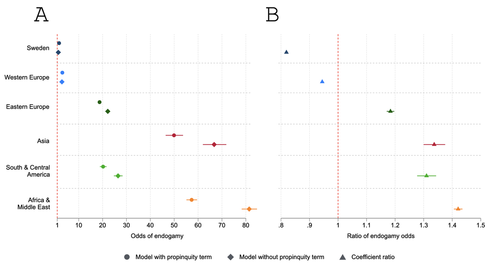
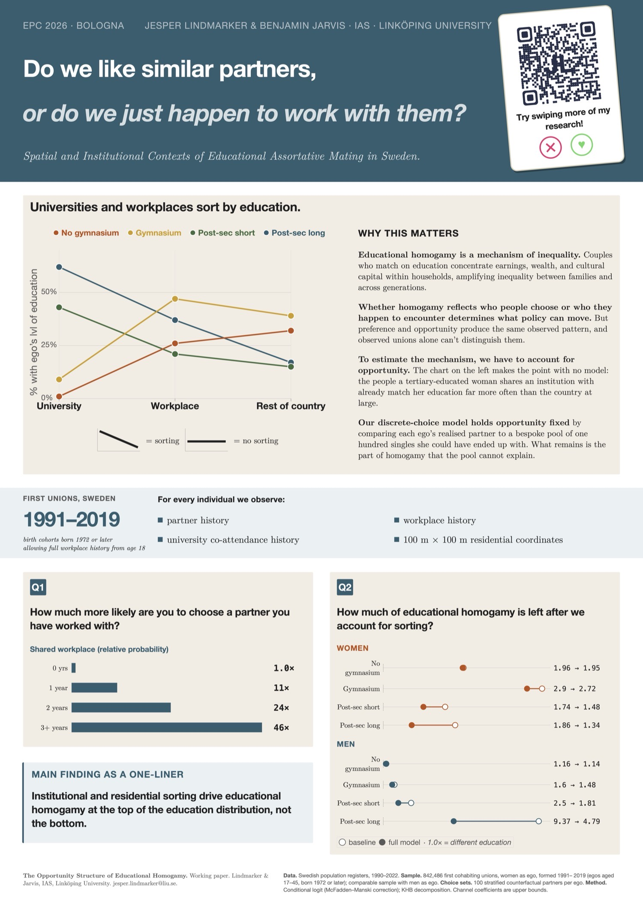
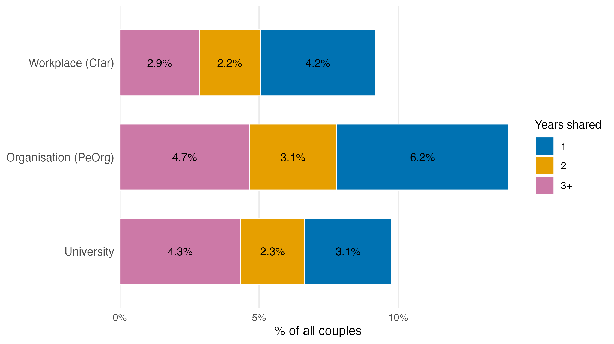
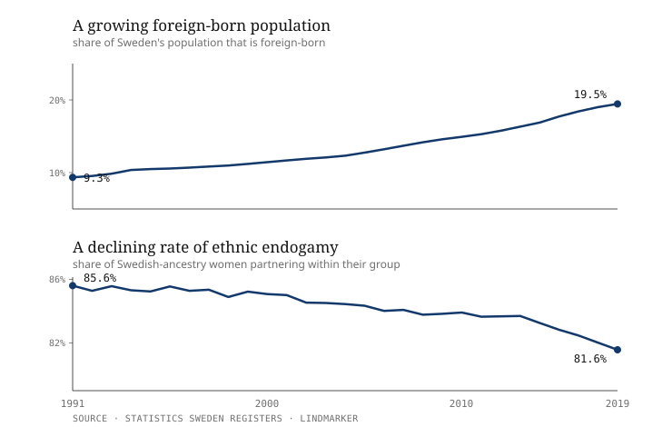
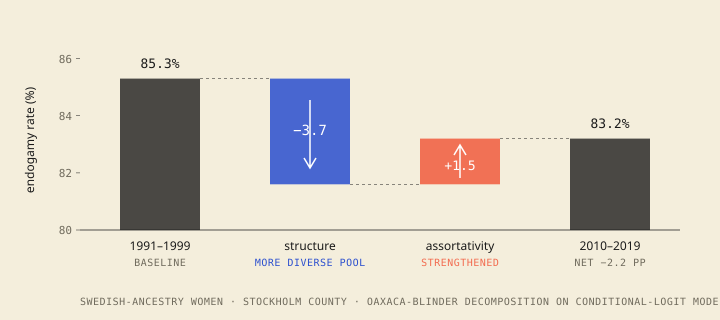

★ The poster you just scanned
01 / 04
The study behind the poster. Swipe right for the question, the data, the method, and what we found.
The study behind the poster. Swipe right for the question, the data, the method, and what we found.
If interethnic unions keep rising, are ethnic boundaries actually softening? Or has the partner market simply shifted?

Pull the sliders. Watch couples form. See how segregation, attraction, and distance sensitivity produce the sorting we see in real Swedish data.

Residential proximity mediates 20 to 40 percent of ethnic endogamy. Segregation narrows the partner market before anything else gets a say.


Educational homogamy, the tendency for people with similar schooling to partner up, is one of the most stable findings in family demography. It also concentrates education, and the earnings that follow it, within households. So it matters whether it reflects who people choose or simply who they are routed past.
This poster takes the second possibility seriously. Using Swedish population registers, it asks how much of educational homogamy can be traced to three opportunity channels, where people live, where they work, and where they study, and how much is left once those are accounted for.
Similarly-educated people partner with each other far more than chance would predict. But how much of that is choice, and how much is simply being routed through the same universities, workplaces, organisations, and neighbourhoods? Switch the channels on one at a time and watch the homogamy shrink toward 1×, the rate you would see if education carried no weight at all.
Swedish registers, 842,486 first unions with women as ego (men estimated separately), 1991 to 2019. Bars show the odds of partnering with someone of the same education rather than a different education, where 1× is the rate expected if education did not matter. Channels are added in the order people meet them; what remains at the end is residual assortativity, an upper bound on what choice could explain, not proof of preference. KHB decomposition on the Model 4 scale.
Unfold the study →
Similarly-educated people partner with each other far more often than chance would predict. The open question is why. Do they prefer one another, for shared outlook, lifestyle, or earning power? Or do universities and workplaces simply place them in the same rooms, year after year, until partnering becomes the likely outcome?
And does the same answer hold across the whole education distribution, or only part of it?
Three forces shape who we end up with: who we prefer, who we get the chance to meet, and who our families and communities steer us toward (Kalmijn 1998). This study isolates the middle one. Following Blau's argument that social structure sets the odds of contact, and Feld's idea that everyday life is organised around shared foci, a workplace, a campus, a neighbourhood, it treats the partner pool as something built by where people are routed before any choice is made.
The catch is that opportunity and choice produce the same thing: homogamous unions. You cannot tell them apart from the outcome alone. The strategy is to model the opportunity channels we can measure, then read whatever educational sorting remains as an upper bound on what choice could explain.
Swedish population registers from Statistics Sweden, covering the full resident population. The analysis follows every first union from 1991 to 2019, dating a union to the year two people move from separate addresses into a shared one.
For each person we reconstruct a full history: where they lived, at 100-metre resolution; every employer; and every university enrolment. Around 957,000 first unions among women anchor the main analysis, with men estimated separately.
The tool is a conditional logit, or discrete choice, model. For every person who formed a union, we build a choice set: their actual partner plus around 100 realistic alternatives, drawn from the singles they could plausibly have met in the same local market that year. The model then asks which features predict who was actually chosen, shared education, short residential distance, a shared employer, a shared campus.
Adding the opportunity channels one at a time, and watching how much of the education effect each one absorbs, lets us attribute a share of educational homogamy to where people live, work, and study, and see what is left over.
Opportunity does a lot of the work, but mainly near the top, as the interactive above shows. For couples where both hold a long tertiary degree, residence, workplaces, and universities together account for around half of their educational homogamy; for the middle of the distribution it is closer to 30 percent. The channels show a clean dose-response: each extra year sharing an employer or a campus raises the odds of a union.
The surprise is at the bottom. For the least educated, these channels explain essentially none of their homogamy. Accounting for where they live even nudges their estimated sorting slightly upward, not down. Whatever brings similarly low-educated people together, it is not the residence, workplace, or university overlap that registers can see.

So the mechanism of educational homogamy is not one thing. It runs through visible institutions at the top of the distribution, and through something registers cannot see at the bottom.
This is the methodological cousin of the ethnic-boundaries work below: the same insistence that opportunity be modelled before behaviour gets named, applied to a different line of division. It extends an earlier study with Ben Jarvis, "However Far Away?", which showed residential proximity alone mediates 20 to 40 percent of ethnic endogamy in Sweden.
The dissertation behind this poster asks one question in four ways: how much of observed partner sorting is opportunity, and how much is residual assortativity, across ethnic and educational lines, in registers covering the full Swedish population, using counterfactual partner comparisons.
Residential proximity mediates 20 to 40 percent of ethnic endogamy. Segregation narrows the partner market before any choice is expressed.
All 2,500 pairings across 50 ancestry groups in Sweden. Seven boundary clusters emerge. The same boundary can be open for women and closed for men.
Conditional logit with Oaxaca-Blinder decomposition, 1991 to 2022. Interethnic unions rise. Residual assortativity does not weaken, and in some places strengthens.
Residence, workplaces, and universities together account for 29 to 40 percent of educational homogamy among the most educated, almost none among the least.
Sweden's immigrant population has grown dramatically since 1991. Ethnic diversity has reshaped the partner market. Over the same period, interethnic unions have become more common in absolute terms. That reads like integration: boundaries eroding, communities mixing, demographic progress.

When you decompose the trend, the picture inverts.
Conditional logit models that hold partner availability constant show that the residual assortativity for same-group partners has not weakened. In several configurations, particularly among Swedish-origin women, it has strengthened. The rise in interethnic unions is not a sign of softening boundaries. It is a mechanical consequence of a partner market reshaped by migration and segregation. More diversity makes same-group pairing structurally harder, even when the appetite for it is unchanged or stronger.

"Without accounting for who is actually available, we mistake a structural shift for an attitudinal one. The Swedish case shows you cannot read boundary change off mixing rates alone."
This matters for how demographic trends get interpreted. Rising intermarriage is routinely read as evidence that integration is working. Without an opportunity-side counterfactual, that reading is unsafe. The same observed rise can come from openness or from arithmetic, and the policy implications differ.
The poster paper upstairs is the methodological cousin of this one: same logic, different dimension, same insistence that opportunity be modelled before behaviour gets named.
The opportunity-versus-assortativity distinction is easier to feel than to explain. Three browser simulations make the lever visible. Adjust segregation, in-group attraction, and distance sensitivity, then watch couples form and see how much sorting emerges from each.
I'm a PhD candidate at the Institute for Analytical Sociology, Linköping University, defending in late 2026 and starting a Swedish Research Council postdoc in 2027. If you work on assortative mating, ethnic boundaries, segregation, or the methods used here, I'd like to talk.